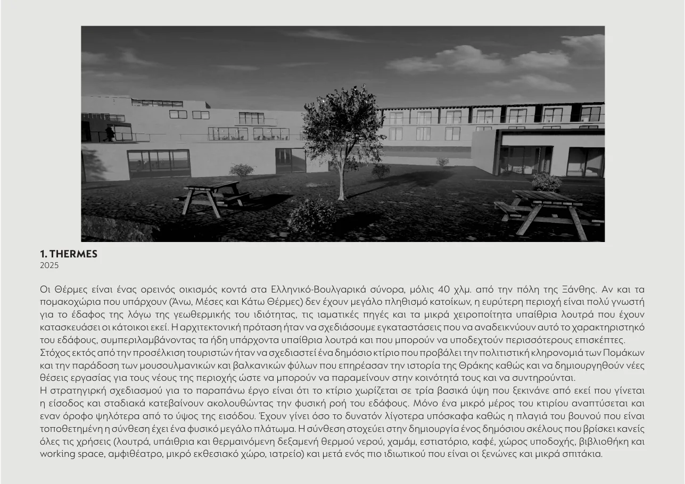
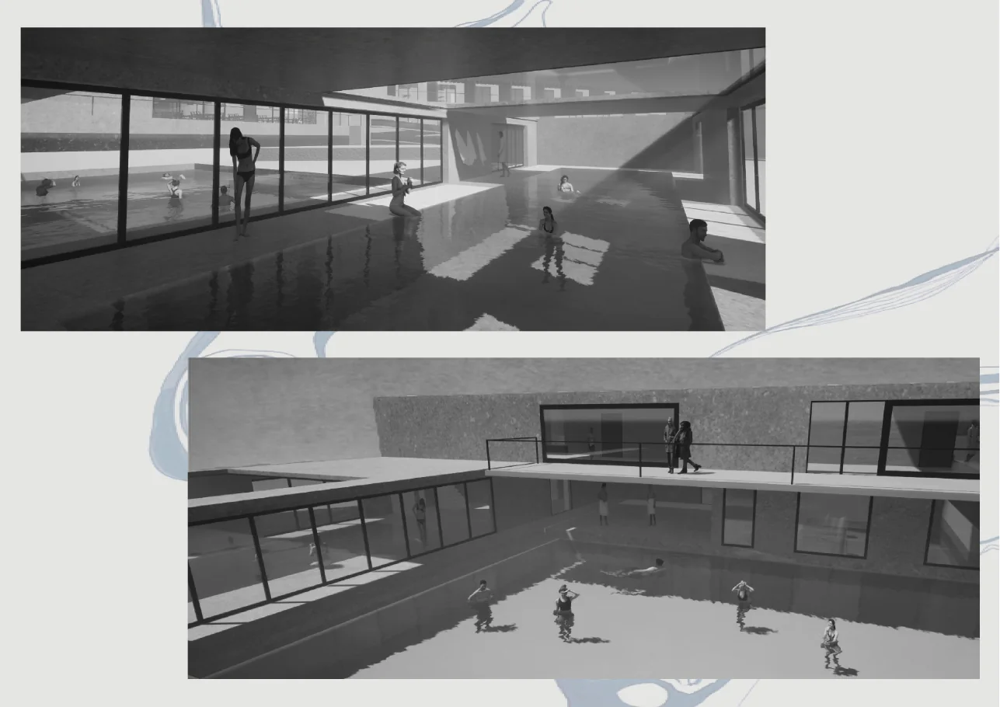
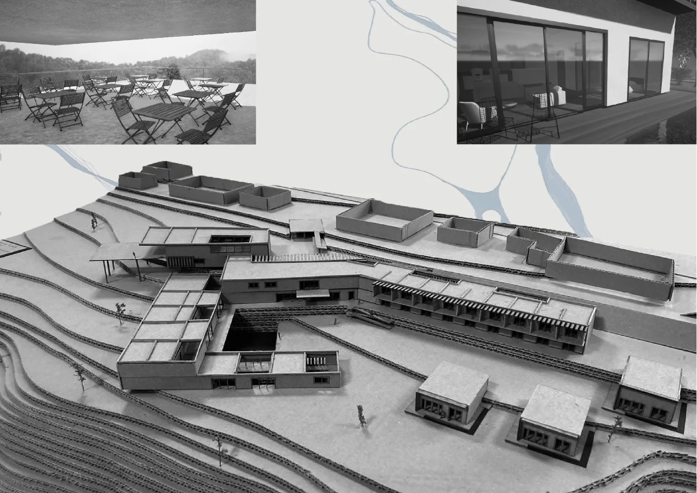
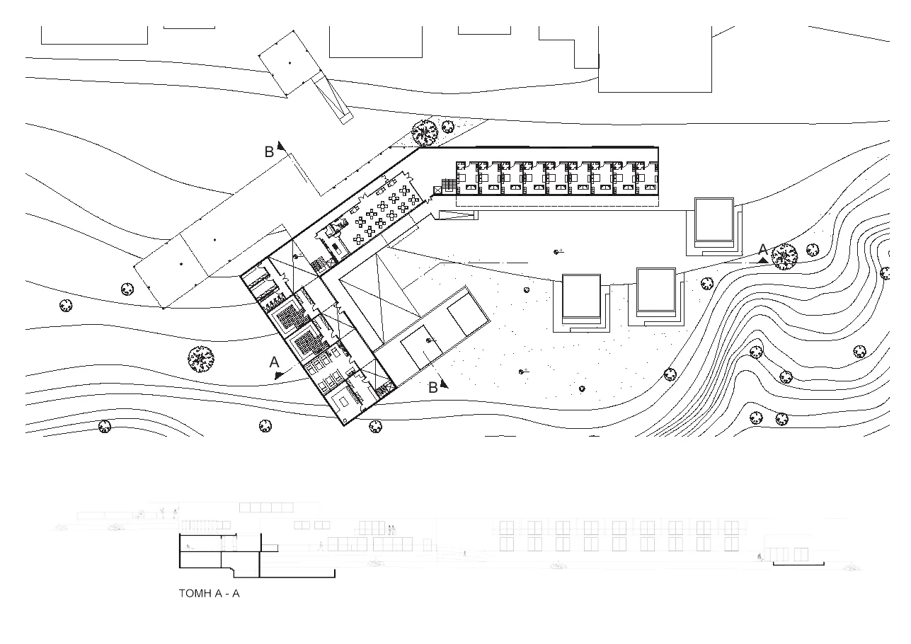
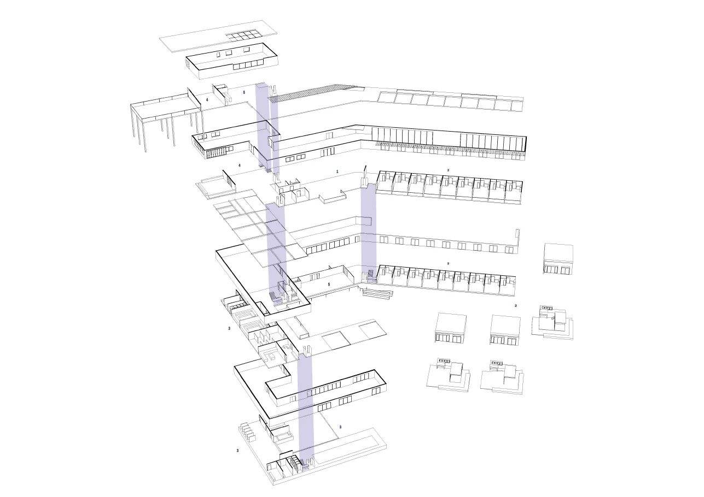

01 · 2025
Thermes
Συγκρότημα ιαματικών εγκαταστάσεων στις Θέρμες Ξάνθης, με δημόσιες χρήσεις, λουτρά, χαμάμ, εστίαση, πολιτιστικούς χώρους και ιδιωτικό σκέλος ξενώνων. Η σύνθεση ακολουθεί τη φυσική κλίση του εδάφους και οργανώνεται σε τρία βασικά υψόμετρα.




